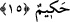
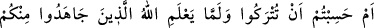
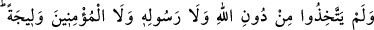

15. Ve onların kalplerinden öfkeyi gidersin. Allah dilediğinin tevbesini kabul eder.
Allah bilendir, hikmet sahibidir.
“Ve onların kalplerinden öfkeyi gidersin.” Allah Teâlâ kâfirlere karşı sizi muzaffer
kılarak kâfirlerin eziyetinden ötürü kederlenen gönüllerin gamını gidersin. Nitekim
Allah onlara ettiği vaadini olabilecek en güzel şekilde gerçekleştirmiştir.
“Allah dilediğinin tevbesini kabul eder.” Bu cümle bazı Mekkelilerin makbul bir
tevbe ile tevbe edebileceklerini haber vermektedir. Nitekim Ebû Süfyan, İkrime b. Ebî
Cehil, Sehl b. Amr gibi bazı Mekkeliler müslüman olmuş ve müslümanlıkları da güzel
olmuştur. “Allah” olmuş ve olacak her şeyi “bilendir, hikmet sahibidir.” Ancak
hikmete uygun şeyleri yapar ve emreder.
16. Yoksa Allah, sizden cihâd eden, Allah, peygamber ve müminlerden başkasını
kendilerine sırdaş edinmeyenleri bilmeden (ortaya çıkarmadan) bırakılacağınızı mı
sandınız? Allah yaptıklarınızdan haberdardır.
“Ey müminler yoksa Allah, sizden «samimi olarak» cihâd eden, Allah, Peygamber
ve müminlerden başkasını kendilerine sırdaş edinmeyenleri bilmeden,” ortaya
çıkarmadan onları diğerlerinden ayırt etmeden, başı boş ve cihad emredilmemiş olarak
“bırakılacağınızı mı sandınız?”
Burada müminlere cihad emri bir tarafa bırakılarak, onların bu zanları sebebiyle
kınanmalarına yönelinmiştir. “Siz başıboş bırakılacağınızı sandınız, öyle mi?” anlamını
ifade eder.
“Ortaya çıkarmadan” mânâsına gelmek üzere “Allah, peygamber ve müminlerden
başkasını kendilerine sırdaş edinmeyenleri bilmeden” diye ifade edilmesinin faydası
şudur: Maksad ilimle alakalı olması ve sevaba medar olması bakımından zikredilen
hususların ortaya çıkmasıdır.
Haddadî der ki: Allah Teâlâ cihad emrini vermeden önce de kimin cihad edeceğini
kimin etmeyeceğini bilmekte idi. Fakat bu bilgi gaybî bir bilgi idi. Murad-ı ilahi, bu
bilginin amellere karşılık olarak verilecek bir ilim olmasını istedi ki bu da müşahedeye
dayalı bir bilgidir. Çünkü Allah Teâlâ onları kendi bildiği ile değil, onların da bildiği
gerçeklere göre mükafatlandıracak veya cezalandıracaktır.
Âyette cihad etmeyenlerin durumuna değinilmemesi, kerimlerin en yücesi olan
Allah’ın iradesine dâhil olmaktan uzak olduğu içindir.